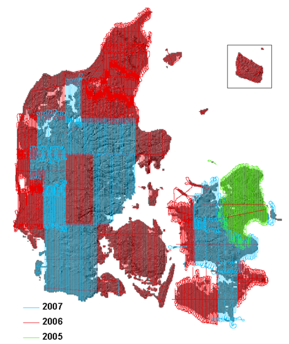

QGIS og vand
Skovskolen, 22/4-2014
Hvem er Septima?
- Etableret januar 2013
- Syv medarbejdere
- Fokus på effektiv udnyttelse af geografisk IT
- Rådgivning, udvikling, services og produkter

Oversigt
- Introduktion til rasterdata
- Effektiv brug af Danmarks Højdemodel i QGIS
- HELE Danmarks Højdemodel i QGIS
- Beregninger på højdemodellen
Rasterdata
Disse data på rasterformat
ncols 3
nrows 4
xllcorner 700000
yllcorner 6200000
cellsize 1000
NODATA_value -999
0.0 110.1 26.3
75.9 -999 82.8
16.2 81.1 35.4
50.0 12.2 99.9
...og på vektorformat
POLYGON((700000.0 6204000.0,701000.0 6204000.0,701000.0 6203000.0,700000.0 6203000.0,700000.0 6204000.0)) 0.0
POLYGON((701000.0 6204000.0,702000.0 6204000.0,702000.0 6203000.0,701000.0 6203000.0,701000.0 6204000.0)) 110.1
POLYGON((702000.0 6204000.0,703000.0 6204000.0,703000.0 6203000.0,702000.0 6203000.0,702000.0 6204000.0)) 26.3
POLYGON((700000.0 6203000.0,701000.0 6203000.0,701000.0 6202000.0,700000.0 6202000.0,700000.0 6203000.0)) 75.9
POLYGON((701000.0 6203000.0,702000.0 6203000.0,702000.0 6202000.0,701000.0 6202000.0,701000.0 6203000.0)) Ukendt
POLYGON((702000.0 6203000.0,703000.0 6203000.0,703000.0 6202000.0,702000.0 6202000.0,702000.0 6203000.0)) 82.8
POLYGON((700000.0 6202000.0,701000.0 6202000.0,701000.0 6201000.0,700000.0 6201000.0,700000.0 6202000.0)) 16.2
POLYGON((701000.0 6202000.0,702000.0 6202000.0,702000.0 6201000.0,701000.0 6201000.0,701000.0 6202000.0)) 81.1
POLYGON((702000.0 6202000.0,703000.0 6202000.0,703000.0 6201000.0,702000.0 6201000.0,702000.0 6202000.0)) 35.4
POLYGON((700000.0 6201000.0,701000.0 6201000.0,701000.0 6200000.0,700000.0 6200000.0,700000.0 6201000.0)) 50.0
POLYGON((701000.0 6201000.0,702000.0 6201000.0,702000.0 6200000.0,701000.0 6200000.0,701000.0 6201000.0)) 12.2
POLYGON((702000.0 6201000.0,703000.0 6201000.0,703000.0 6200000.0,702000.0 6200000.0,702000.0 6201000.0)) 99.9
Laserscanning af højdemodel


Danmarks Højdemodel
- Laserscannet mellem 2005 og 2007
- Cirka 1 punkt per 1,5m x 1,5m (ca 0,5 punkt per m2)
- Horisontal nøjagtighed ca 70cm
- Højdenøjagtighed ca 10cm på veldefinerede flader
- Data kan hentes gratis fra Kortforsyningen
- Mere information på GSTs site
"Produkter"
- DTM (og DTM_BRO)
- DSM
- Punktsky
- Højdekurver
DTM
DSM
Højdekurver
Punktsky
DTM_BRO

DTM
Problemer
- "Gammel"
- En del forskellige fejl og mangler
- Brofix, lakefix, kystfix og andre "korrektioner"
Scanningsår
Klassifikationsfejl
Instrumentfejl
Masser af automatiske "fix"
Ny model på vej
- Scannes 2014 - 2015
- 4 punkter per m2
- Højdenøjagtighed 5cm
- Horisontal nøjagtighed 15cm
Første data
Første data
Vand på terræn
Meget kompliceret...
Antagelser
- Vandet flyder altid ned ad den stejleste rute
- Ingen nedsivning, kloakker etc.
- Vandet flyder uendeligt hurtigt
- (Uendeligt meget vand)
Opfyldt terræn
Opfyldt terræn
Opfyldt terræn
Strømningsretning
Oplandsareal
Kanaler
Opland

KLimaplaner
Data kan hentes gratis fra download.kortforsyningen.dk eller ftp.kortforsyningen.dk